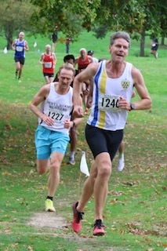
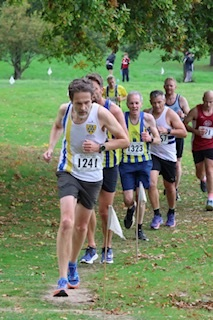
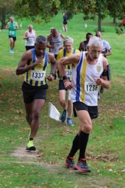
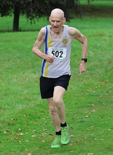
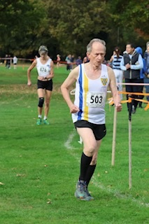

Six senior SAC members contested the second race of the Kent XC League 2025-26 on 18 October in mild, dry conditions.
Yon Marsh was the standout SAC performer as first M65 in the 8K event, while Oloff Van Zyl was narrowly edged to third M55. However, both runners lead their respective age categories after two races. The full Sevenoaks results were:
SW
55 1394 Anna O'Donovan Sevenoaks AC 40:04 SW
M50
12 1240 Oloff Van Zyl (M55) Sevenoaks AC 32:24 (3rd M55)
29 1241 Daniel Witt (M50) Sevenoaks AC 35:59
M60
14 1238 Yon Marsh (M65) Sevenoaks AC 37:54 (1st M65)
M70
5 502 Simon Hallpike (M70) Sevenoaks AC 27:38
10 503 Jim Knight (M70) Sevenoaks AC 31:35
The full results are here.
This brings the KXCL series to the halfway stage with no mud! The next fixture, except for senior under-65 women, is at Danson Park on 15th November.